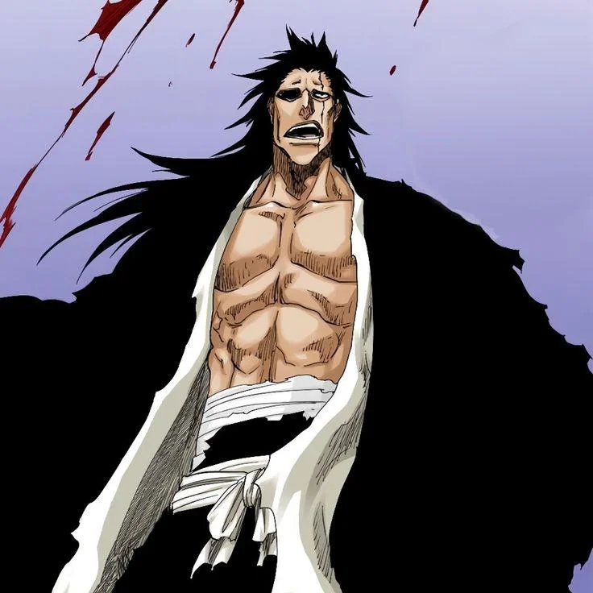

ZARAKI

Kenpachi Zaraki é o capitão da 11ª Divisão do Gotei 13 em Bleach e é conhecido como um dos
Shinigamis mais poderosos e temidos. Sua personalidade é marcada pelo amor ao combate e por uma sede
insaciável de enfrentar adversários fortes, lutando puramente pela emoção da batalha. Zaraki cresceu
na violenta área do Distrito 80 de Rukongai, onde a lei da sobrevivência moldou sua personalidade
brutal e o fez buscar sempre oponentes mais poderosos.
Zaraki é um guerreiro nato, confiando inteiramente em sua força física e habilidades de combate. Ele
não possui treinamento formal em técnicas espirituais avançadas, mas compensa isso com um poder
espiritual colossal e uma resistência incomum. Zaraki se recusa a aprender o nome de sua Zanpakutou,
pois isso significaria usar suas habilidades totais, o que, segundo ele, tiraria a diversão das
lutas.
SHIKAI
A Shikai de Kenpachi Zaraki é chamada Nozarashi, e é tão brutal e direta quanto ele. Quando ativada,
sua Zanpakutou, que normalmente tem uma aparência desgastada e irregular, se transforma em uma
enorme espada com aparência de machado, capaz de cortar qualquer coisa com extrema facilidade. A
habilidade principal de Nozarashi é conceder a Zaraki uma força destrutiva que aumenta
significativamente seu poder de ataque, permitindo-lhe cortar através de praticamente qualquer
defesa ou barreira, independente de quão resistente ela seja.
Nozarashi é uma extensão perfeita do estilo de combate de Zaraki: poderoso, direto e sem truques
complexos. Em vez de depender de técnicas ou estratégias avançadas, ele usa pura força bruta e
habilidade física para esmagar seus oponentes, aproveitando ao máximo o poder de corte imenso de
Nozarashi. Quando empunhada por alguém com a força e resistência de Zaraki, Nozarashi se torna uma
arma devastadora, refletindo a natureza selvagem e indomável do seu portador.
BANKAI
A Bankai de Kenpachi Zaraki é uma manifestação pura de seu poder selvagem e destrutivo,
transformando-o em uma versão ainda mais feroz e imparável. Quando ativada, sua aparência muda
drasticamente: sua pele fica vermelha, ele ganha marcas faciais, e sua expressão se torna bestial.
Em sua forma de Bankai, Zaraki perde quase toda a racionalidade e fica entregue a um instinto brutal
de luta, atacando seus oponentes de maneira desenfreada e implacável.
A Bankai amplifica sua força física e poder de corte a níveis extremos, permitindo-lhe dividir
edifícios e oponentes ao meio com um único golpe. Ela lhe dá um poder de destruição absoluta, mas
também torna suas técnicas ainda mais diretas e perigosas, já que Zaraki perde grande parte de seu
autocontrole. Ele se torna uma força incontrolável, sendo guiado apenas pelo desejo de destruir
qualquer coisa que esteja em seu caminho.
A Bankai de Zaraki reflete sua essência como guerreiro: indomável, avassaladora e sem restrições.
Essa habilidade o coloca entre os Shinigamis mais poderosos e mortais de Bleach, pois ele se torna
um verdadeiro monstro em batalha, disposto a tudo para vencer e desafiar seus limites físicos.
AMIGOS QUE FAZEMOS PELO CAMINHO


GOTEI 13